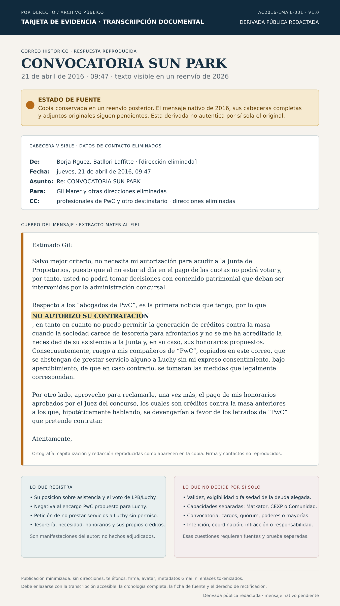

Pamanil remite convocatoria
El mensaje reproducido dice que la convocatoria de 26 de abril también se enviaba por correo electrónico y pregunta si asistirían. No prueba por sí solo notificación válida, suficiente o igual para todos.
CONVOCATORIA → IMPUGNACIÓN → SOLICITUD → RESPUESTA LIMITADA A LPB
En la respuesta reproducida de 21 de abril de 2016, Francisco de Borja Rodríguez-Batllori Laffitte manifestó que Gil no necesitaba permiso para la mera asistencia, afirmó que la falta de pago de cuotas impedía votar, denegó autorizar la contratación propuesta de PwC por LPB/Luchy y pidió a los profesionales de PwC copiados que no prestaran servicios a Luchy sin su consentimiento expreso.

Estado de fuente: la fuente disponible es un reenvío de 2026 que reproduce una cadena visible de 2016. No es el mensaje nativo de 2016. El transporte de 2026 no autentica las cabeceras originales, entrega, lectura, adjuntos ni exhaustividad.
Estimado Gil:
Salvo mejor criterio, no necesita mi autorización para acudir a la Junta de Propietarios, puesto que al no estar al día en el pago de las cuotas no podrá votar y, por tanto, usted no podrá tomar decisiones con contenido patrimonial que deban ser intervenidas por la administración concursal.
Respecto a los “abogados de PwC”, es la primera noticia que tengo, por lo que NO AUTORIZO SU CONTRATACION, en tanto en cuanto no puedo permitir la generación de créditos contra la masa cuando la sociedad carece de tesorería para afrontarlos y no se me ha acreditado la necesidad de su asistencia a la Junta y, en su caso, sus honorarios propuestos. Consecuentemente, ruego a mis compañeros de “PwC”, copiados en este correo, que se abstengan de prestar servicio alguno a Luchy sin mi expreso consentimiento, bajo apercibimiento de que, en caso contrario, se tomarán las medidas que legalmente correspondan.
Por otro lado, aprovecho para reclamarle, una vez más, el pago de mis honorarios aprobados por el Juez del concurso, los cuales son créditos contra la masa anteriores a los que, hipotéticamente hablando, se devengarían a favor de los letrados de “PwC” que pretende contratar.
Atentamente,
En la transcripción accesible se normalizan tildes de puntuación para facilitar la lectura. La tarjeta identifica dónde se conserva la grafía de la copia.
El mensaje reproducido dice que la convocatoria de 26 de abril también se enviaba por correo electrónico y pregunta si asistirían. No prueba por sí solo notificación válida, suficiente o igual para todos.
Gil comunica a Asunción que documentos en actas comunitarias muestran que las cifras del administrador son erróneas y vuelve a solicitar la documentación. Prueba que se formuló la controversia, no que fuera correcta o atendida.
Gil pide a Borja autorización firmada para acudir y para que le acompañen los abogados de PwC copiados. Este mensaje aislado no prueba que PwC hubiera aceptado un encargo o confirmado asistencia.
Borja dice que asistir no requiere autorización, adopta la premisa de morosidad para el voto, niega el encargo propuesto, pide no prestar servicios a Luchy sin permiso y alude a sus propios honorarios.
Ningún texto de esta respuesta resuelve las capacidades separadamente alegadas por Gil Marer respecto de Matkator, CEXP, la Comunidad de Propietarios o a título personal, ni un posible mandato separado de PwC para otro cliente o capacidad. Un saldo alegado puede ser relevante para decidir si LPB podía votar si se cumplían los requisitos legales. No determina por sí solo quién convocó y constituyó legítimamente la Comunidad, quién podía representarla, si existían cargos válidos, convocatoria, quórum, representaciones y la mayoría personal y de cuotas aplicable a cada acuerdo, ni si la autoridad se extendía a Matkator, CEXP u otros derechos ajenos a LPB.
La aritmética de una deuda puede afectar a un voto; no crea la autoridad de la Comunidad.Fuentes relacionadas pero separadas: se informa de que un correo de 20 de abril registra planes de asistencia de PwC; el paquete de convocatoria de 26 de abril contiene orden del día, presupuesto propuesto, relación de supuestos deudores, carta de la presidenta y acta de 2015. Esas proposiciones deben citar sus propias fuentes, no atribuirse silenciosamente a esta cadena. El paquete está en revisión documental, redacción y conciliación.
Límite de transporte: estos cinco PDF se recuperaron de un reenvío separado de 2026 del mensaje de Pamanil de 18 de abril. La prueba actual no demuestra que el Administrador los recibiera o leyera antes de responder el 21 de abril.
| Registro privado de custodia | Qué consigna | Significado controlado |
|---|---|---|
| Convocatoria · 6 abr | Orden del día: cuentas 2010–2015, presupuesto/cuotas 2016, objeciones, fijación/liquidación de saldos alegados, certificados, pleitos, penalización del 15%, banco y actuaciones relativas a LPB. | La junta propuesta tenía contenido patrimonial y de gobernanza sustancial. |
| Presupuesto 2016 | 70.000 € de cuotas; 69.803,16 € de gasto ordinario; 22,26 € mensuales por bungalow; saldo bancario ???; líneas operativas principales a cero porque no se podían detallar. | Expone bases no cuantificadas que exigen conciliación guiada por fuentes. |
| Relación de supuestos deudores | Saldo positivo para cada código de finca 1–262; total 3.866.774,25 €; sin nombres de propietarios, periodos transaccionales, servicios, financiación CEXP, créditos o compensaciones. | Es una relación de recibos pendientes alegados, no certificado de deuda, mayor, sentencia ni prueba de exigibilidad residual. |
| Carta de la presidenta | Dice que la documentación suficiente para convocar se obtuvo solo el 30 de marzo; invita a asistir sin voto a supuestos deudores; pide acreditar pagos a cuentas bancarias de la Comunidad. | No aborda pagos del operador/CEXP, gastos directos del hotel, facturación recíproca o compensación. |
| Compuesto ACTA noviembre 2015 | 38 páginas; LPB 72,976%, Thompson 0,385%, solo dos propietarios/0,770% con voto; deuda alegada de 3.641.456,50 €; los asistentes reconocen cuotas excesivas y proponen reducción retroactiva. | Es el precursor documental directo de la solicitud de abril e intensifica las preguntas de autoridad, voto y conciliación. |
Con los documentos actuales, esa posición merece examen penal formal, pero el correo aislado no permite afirmar delito. En 2016, un Administrador Concursal podía controlar la generación de créditos contra la masa y pedir justificación de necesidad/honorarios. Asimismo, el artículo 15.2 LPH privaba de voto al propietario con deudas vencidas, salvo impugnación judicial o consignación. La cuestión no es la mera existencia de esas facultades: es si se usaron con premisas verdaderas, dentro del cargo y sin causar deliberadamente un perjuicio.
Con retrospectiva, la importancia del correo aumenta si la prueba completa acredita alguno de estos puentes: deuda simulada o conscientemente falsa; ocultación o alteración documental; manipulación de prueba en el concurso; exceso deliberado en la administración de patrimonio ajeno con daño; reconocimiento de créditos ficticios; o uso coordinado de la exclusión de voto para producir un resultado patrimonial. Esos puentes todavía requieren documento, autor, conocimiento, acto, causalidad y perjuicio.
| Ruta | Elemento legal relevante | Estado de esta prueba |
|---|---|---|
| Estafa / estafa procesal · arts. 248 y 250.1.7 CP | Engaño bastante, error, acto de disposición, perjuicio y ánimo de lucro; en la procesal, manipulación de prueba o fraude que provoque una resolución perjudicial. | No establecido por el correo. Exige probar falsedad/decepción, presentación o uso procesal, error decisorio, beneficio y daño. |
| Administración desleal · art. 252 CP | Facultades sobre patrimonio ajeno, infracción por exceso y perjuicio patrimonial. | Hipótesis posible, no conclusión. Hay que identificar facultad concreta del AC, exceso, dolo, patrimonio administrado, acto y daño causal. |
| Insolvencia punible · art. 259 CP | Entre otras conductas, ocultar masa, simular créditos, reconocer créditos ficticios o infringir gravemente la diligencia con disminución patrimonial/ocultación de realidad económica. | Solo si la cadena ampliada lo prueba. La frase sobre deuda no demuestra que el crédito fuera ficticio ni que el remitente lo supiera. |
| Falsedad documental · arts. 392, 393 y 395–396 CP | Alteración/simulación documental o atribución falsa de intervenciones/declaraciones; uso consciente en juicio o para perjudicar. | No se desprende del correo. Requiere el certificado, acta, contabilidad o documento supuestamente falso y prueba de autoría/conocimiento/uso. |
Prescripción: al tratar hechos de 2016, un abogado penalista debe resolver antes de cualquier conclusión los artículos 131–132 CP: pena máxima aplicable, fecha de consumación, posible continuidad/permanencia/conexidad y actos judiciales que hayan interrumpido o suspendido el cómputo. No debe suponerse vigencia ni prescripción sin ese análisis.
La anterior Ley Concursal trataba separadamente la masa de la concursada y el derecho de separación de bienes ajenos en poder del deudor. Por eso el examen de la «separación» no puede sustituirse por la sola deuda de LPB ni por una lectura unitaria del complejo como si todos los propietarios, activos y derechos fueran de la concursada.
El repositorio conecta esta secuencia con las posteriores solicitudes de separación/remoción del Administrador Concursal y con la alegación de bienes y derechos extraconcursales. Esa conexión es contextual: una solicitud posterior no convierte automáticamente en penal el correo de 2016, pero sí obliga a comprobar qué sabía el AC de los perímetros, qué verificó, qué informó al Juzgado y qué resultado patrimonial siguió.
LPH · arts. 15–16 (BOE)Código Penal (BOE)Ley Concursal 22/2003 (BOE)Expediente del ACExpediente PwC
La copia Gmail reenviada en 2026 conserva el cuerpo de 2016 y tres imágenes de firma/renderizado; sus controles de transporte de 2026 no autentican criptográficamente los encabezados originales de 2016. La conservación forense debe incluir exportación original, hashes, adjuntos de convocatoria, fotografías, acta, poderes y expediente judicial certificado.